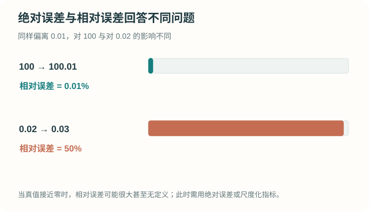

CHAPTER 01 · NUMERICAL ANALYSIS
数值分析：从误差开始理解计算
每一次数值输出都包含一个问题：它离我们真正关心的量有多远？从误差来源与尺度建立判断计算是否可信的基本框架。
01 · 一个正确公式为什么得出不可信的答案？
真实长度为 0.020，仪器显示 0.030，看起来只差 0.010。但如果业务要求误差不超过 0.005，这就是失败。若真实长度为 100.000，还是多出 0.010，实际影响可能很小。算法能否满足要求，取决于误差相对什么量被衡量。
数值分析研究如何将连续数学问题转为有限次计算，并判断结果的误差、收敛速度、计算成本和数值稳定性。它不是简单地“算出更多位小数”：在某些问题中，模型不够准确；在另一些问题中，即使数学公式正确，浮点运算也会丢失关键信息。
02 · 先区分误差的来源
模型误差：把现实简化成数学描述时的偏差，例如忽略空气阻力。输入误差：测量装置分辨率、标定或噪声导致输入本身不精确。截断误差：以有限项级数、有限网格或有限步迭代替代连续对象。舍入误差：有限位数的浮点数无法表示任意实数。
四类误差需要不同的处理方法。例如缩小网格间距可能降低某个差分格式的截断误差，却同时增加运算次数或放大舍入误差。先识别误差来源，才能决定应该改模型、改数据、改离散格式还是改算法。
03 · 绝对误差和相对误差
以真实值或可信参考值 x 为基准，计算结果记作 x̃。绝对误差衡量两者的直接偏离；对非零 x，相对误差再除以参考值的尺度：
真实值恰为零时，相对误差无定义；接近零时相对误差也可能非常大。此时应优先采用物理尺度定义的绝对误差、混合容差或适合具体任务的误差指标。

04 · 浮点有效位数与舍入
主流硬件的 IEEE 754 binary64 格式采用 53 位二进制有效精度（含隐含有效位），足以提供约 15–17 位有意义的十进制数字，但不意味着每个十进制数都能被精确表示。0.1 在二进制中通常为无限循环小数，因此 0.1 + 0.2 不能简单地按十进制精确算术理解。
在单次正确舍入、结果为正常有限浮点数等通常假设下，浮点计算常用以下误差模型：
这里 u 是单位舍入误差，∘ 是四则运算之一。下溢、上溢、NaN 和某些非正规数情形需要单独考虑，不能把模型套用于一切计算。
import math
print(repr(0.1+0.2)) # 0.30000000000000004
print(math.isclose(0.1+0.2,0.3,rel_tol=1e-15))
print(1e16+1 == 1e16) # True: 加 1 被舍去05 · 一套可以复现的验证步骤
第一步，指定参考量和应用容差。第二步，判断问题是否对输入扰动敏感。第三步，选择在目标输入范围内具有误差与稳定性分析的算法。第四步，设计极端输入、解析样例、残差和交叉计算作为验证材料。最后报告实际测试的精度和不能保证的条件。
例如测试平方根程序，不能仅输入 4；还应覆盖零、非平方数、大数、接近下溢的数字以及无效输入。两种程序结果相同也不必然意味着正确，因为它们可能共享数值缺陷。
原始资料与延伸阅读
以下资料用于核查理论、适用前提和计算语义。图示和数值例子为独立制作的教学演示。
- Nicholas J. Higham, Accuracy and Stability of Numerical Algorithms。SIAM 第二版，2002；误差、条件与算法稳定性。
- David Goldberg, What Every Computer Scientist Should Know About Floating-Point Arithmetic。ACM Computing Surveys 1991 论文的公开重印。